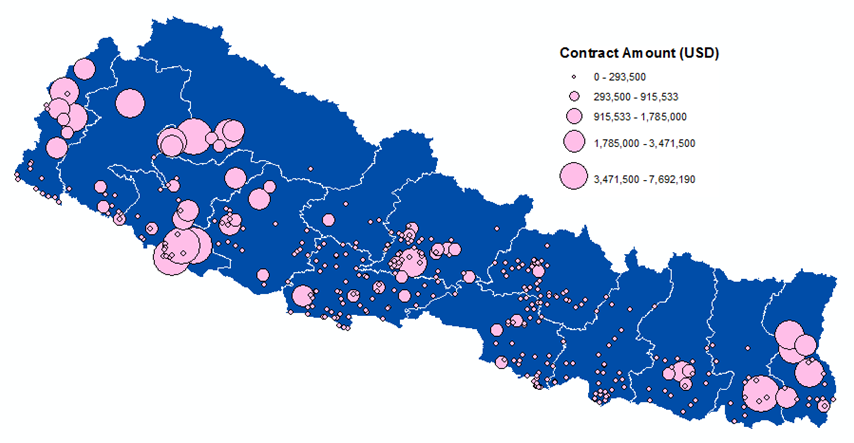
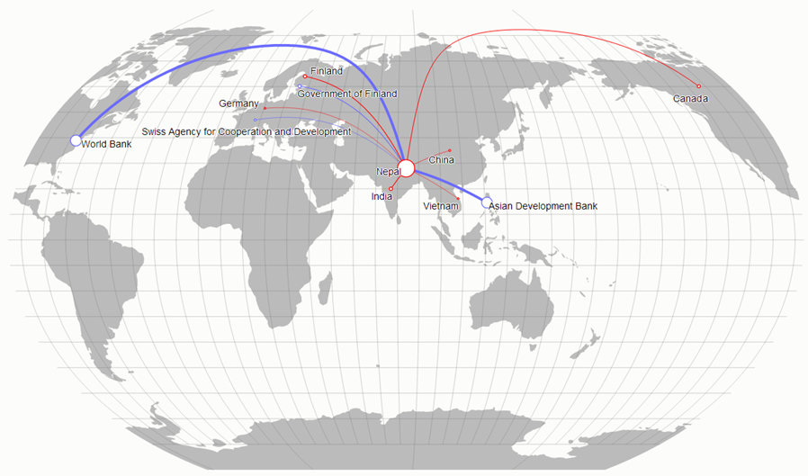

From March-June, 2013, AidData, the Open Aid Partnership, and the Government of Nepal worked on a pilot exercise to collect and code procurement data in Nepal. The goal of that exercise was to see the degree to which open procurement data could provide operationally-relevant information on development activities, with the view of aiding planners and policy makers to better understand patterns of spending in their sectors/countries.
Public information on procurement was obtained from the World Bank, the Asian Development Bank, and Nepal's Department of Local Infrastructure Development and Agricultural Roads. The DG team focused the pilot on four primary sectors: Water and Sanitation, Transportation, Energy, and Education. Documents for 38 unique projects were collected for the pilot, resulting in 435 individual contracts and tender awards. Geographic information for these procurement documents was also coded, allowing the procurement data to be mapped to specific point locations.
This webpage contains the raw data in CSV format. Please contact Owen Scott (oscott at aiddata.org) with any questions.
| File | Field | Description |
|---|---|---|
| Projects | Database ID | Primary key for the project. |
| Projects | OAP ID | An internal ID used during the pilot. (Ignore). |
| Projects | AMP ID | The ID for the project in Nepal's Aid Management Platform (if available). |
| Projects | Development Partner Project ID | The project ID used by the development partner who is funding the project (if available). |
| Projects | Development Partner | The name of the development partner funding the project. |
| Projects | Project Title | The title of the project. |
| Projects | OAP Sector | The project sector for the purpose of this pilot, using a very simplified list. |
| Projects | AMP Sector | The project sector according to Nepal's Aid Management Platform |
| Projects | Description | A description of the project. |
| Projects | Partner Ministry | The main ministry which worked on the project. |
| Projects | Start Date | The start date for the project. |
| Projects | End Date | The end date for the project. |
| Projects | Total Commitment | The total funds (USD) committed to the project. |
| Projects | Total Disbursement | The total funds (USD) disbursed for the project to date. |
| Projects | Project Info Source | The source of the data about the project. |
| Contracts | ProjectID | The unique ID for the project (references "Database ID" in the Projects file). |
| Contracts | TransactionID | The primary key for the contract (for legacy reasons within the pilot "transaction" is used to refer to the combination of a procurement notice and a contract award). |
| Contracts | TransactionTitle | A descriptive title of what the contract is for. |
| Contracts | WrittenDescription | Additional information about what the contract is for. |
| Contracts | ProcurementCategory | The category of goods/services that the contract is for. |
| Contracts | TenderNoticeSource | A link to the original tender notice or a file name in the event of scanned documents (note: currently the original scanned documents are not available as part of the dataset). |
| Contracts | ContractAwardID | Legacy (ignore). |
| Contracts | ContractorName | The name of the contractor to whom the contract was awarded. |
| Contracts | ContractorCountry | The country in which the winning contractor is based. |
| Contracts | ContractAmount | The contract amount, in any currency. |
| Contracts | ContractCurrency | The currency which the original contract amount is in. |
| Contracts | ContractAmountUsd | The contract amount, converted to USD. |
| Contracts | DateOfAward | The date on which the contract was awarded to the contractor. |
| Contracts | StartDate | The start date for the contract. |
| Contracts | EndDate | The end date for the contract. |
| Contracts | ContractAwardSource | A link to the original contract or a file name in the event of scanned documents (note: currently the original scanned documents are not available as part of the dataset). |
| Locations | TransactionID | The ID of the transaction (contract) with which the location is associated (references TransactionID in the Contracts table). |
| Locations | GeonameID | The unique ID for the location from Geonames. |
| Locations | Latitude | The latitude of the location in decimal degrees (WGS1984). |
| Locations | Longitude | The longitude of hte location in decimal degrees (WGS1984). |
| Locations | Geoname | The name associated with the location. (Some of these were corrupted during db export - you may want to get them again from the Geonames API) |
| Locations | UcdpPrecision | The precision code for the location using the UCDP methodology. |
| Locations | ADM1 | The first-level administrative region for the location. |
| Locations | ADM1ID | The unique ID for the first-level administrative region for the location. |
| Locations | ADM2 | The second-level administrative region for the location./td> |
| Locations | ADM2ID | The unique ID for the second-level administrative region for the location. |